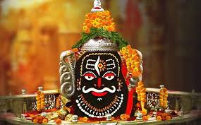
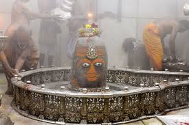
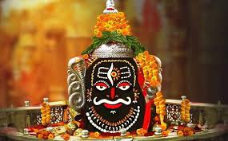
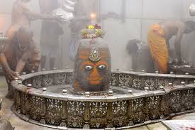

About Mahakaleshwar Temple
The Mahakaleshwar Temple, located in Ujjain, Madhya Pradesh, is one of the most revered temples of Lord Shiva and one of the 12 Jyotirlingas in India. The temple is famous for its unique Bhasma Aarti, where the Shiva Lingam is worshipped with sacred ash every morning. The temple’s spiritual significance and powerful aura attract lakhs of devotees every year.
Why Visit?
- One of the 12 Jyotirlingas of Lord Shiva.
- Experience the sacred Bhasma Aarti, performed at 4 AM daily.
- Magnificent Maratha-style architecture with spiritual carvings.
- Located on the banks of the holy Shipra River, enhancing the divine atmosphere.
Location & Travel
Nearest Railway Station: Ujjain Junction (~2 km)
Nearest Airport: Indore Airport (~55 km)
Well connected by road to Indore, Bhopal, and other major cities in Madhya Pradesh.
Visiting Details
- Best Time to Visit: October to March (pleasant weather, festival time).
- Timings: 4:00 AM – 11:00 PM
- Special Ritual: Bhasma Aarti (requires advance online booking or offline pass).
Average Travel Expense
A 1–2 day trip to Ujjain including food, stay, and darshan may cost around:
- Budget: ₹2,000 – ₹3,500 per day
- Mid-range: ₹4,000 – ₹6,000 per day